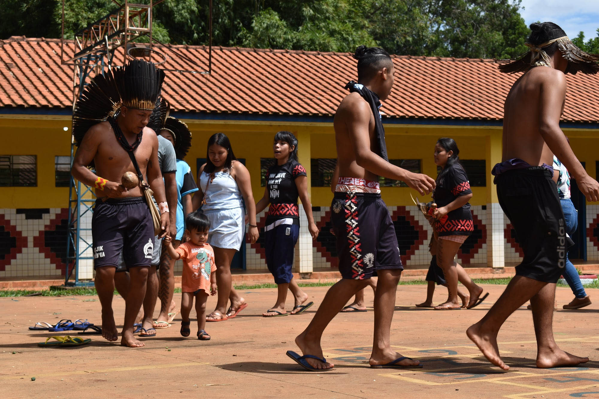

Caingangues
Proveniente do tronco da família linguística macro-jê, os caingangues se concentram em quatro estados do Brasil: São Paulo, Paraná, Santa Catarina e Rio Grande do Sul.
O contato dos Kaingang com a sociedade envolvente teve início no final do século XVIII e efetivou-se em meados do século XIX, quando os primeiros chefes políticos tradicionais (Põ’í ou Rekakê) aceitaram aliar-se aos conquistadores brancos (Fóg), transformando-se em capitães. Esses capitães foram fundamentais na pacificação de dezenas de grupos arredios que foram vencidos entre 1840 e 1930. Entre os desdobramentos dessa história, destacam-se o processo de expropriação e acirramento de conflitos, não apenas com os invasores de seus territórios, mas intragrupos kaingang, uma vez que o faccionalismo característico dos grupos jê foi potencializado pelo contato. Os Kaingang vivem em mais de 30 Terras Indígenas que representam uma pequena parcela de seus territórios tradicionais. Por estarem distribuídas em quatro estados, a situação das comunidades apresenta as mais variadas condições. Em todos os casos, contudo, sua estrutura social e princípios cosmológicos continuam vigorando, sempre atualizados pelas diferentes conjunturas pelas quais vêm passando.
Nome
Autodenominação: Kanhgág; Kaingang.
De acordo com Teschauer (1927), os Guayanás que viviam na costa atlântica entre Angra dos Reis e Cananéia seriam ascendentes dos Kaingang. Os nomes Guayaná, Goyaná, Goainaze, Wayanaze, seriam denominações dadas aos Kaingang daquela região. O nome Guayaná continuou sendo utilizado até 1843 juntamente com outros como Coroado, Coronado, Shokleng, Xokren; Guanana, Gualachos, Gualachí, Chiqui, Cabelludo; Tain, Taven, Tayen, Ingain, Ivoticaray; Nyacfateitei; Votoron, Kamé, Kayurukré, Dorin; Tupi (Kaingang que viviam em Misiones - norte da Argentina - e no extremo oeste do Rio Grande do Sul, às margens do rio Uruguai). Essa variedade de denominações acabou produzindo uma grande confusão para os pesquisadores. Importante apontar ainda que alguns desses grupos podem estar relacionados não aos Kaingang, mas aos Xokleng, Guarani ou Xetá que também fizeram resistência contra a presença européia nas terras do Sul.
A denominação Kaingang só foi introduzida no final do século XIX por Telêmaco Borba. Inicialmente, os Kaingang e os Xokleng foram classificados como uma só etnia com dialetos diferentes, sendo os Xokleng denominados Aweikoma-Kaingang por Métraux (1946) no Handbook of South American Indians. Atualmente são considerados duas etnias com um passado remoto comum (Urban, 1992) que, com a separação histórica, desenvolveram processos socioculturais específicos que os tornaram relativamente diferenciados.
Língua
A língua kaingang, da família jê, tem cinco dialetos, com diferenças fonológicas. Ursula Wiesemann foi responsável pelo estudo da gramática e pela implantação da escrita, além de introduzir o bilingüismo nas escolas kaingang. A língua é ensinada até a segunda série, após o que o português é predominante.
Em algumas comunidades, todos falam kaingang, enquanto em outras, a maioria é bilíngue ou fala português. Há um esforço crescente para valorizar a língua, especialmente nas lutas territoriais, e políticas públicas estão ajudando na preservação, com materiais bilíngues para educação e saúde.
População
Estimava-se uma população kaingang de 25.875 pessoas vivendo em 32 Terras Indígenas (Funasa, 2003). No entanto, verifica-se a presença de famílias vivendo nas zonas urbanas e rurais próximas às TIs. Na grande Porto Alegre-RS surgiram três grupos kaingang que passaram a viver na cidade e um já conseguiu local para construir a aldeia. São grupos formados por uma família extensa inteira ou parte da que permaneceu na TI de origem. Na zona rural a presença kaingang se dá por unidades familiares ou individualmente, que, pela impossibilidade (econômica ou política) de viverem nas TIs, passaram a viver como trabalhadores não qualificados em fazendas e sítios das regiões próximas às aldeias. Se computadas todas essas famílias, o contingente populacional kaingang poderá chegar a 30 mil.
É importante registrar que os censos realizados até o presente são bastante precários porque as famílias kaingang mudam-se freqüentemente de aldeia e de TI pelas mais variadas razões e essa dinamicidade dificulta a sua visibilidade. O crescimento vegetativo é considerado bastante alto e, mesmo com elevado índice de mortalidade infantil, quando os censos são divulgados, estes já se encontram defasados.

Contato
A história do contato entre os Kaingang e os colonizadores europeus teve início ainda no século XVI, quando alguns grupos que viviam mais próximos ao litoral atlântico tiveram contatos com os primeiros portugueses. No entanto, os registros históricos dessa época não especificam com segurança aqueles grupos que eram os ancestrais dos atuais Kaingang.
Embora a grande maioria dos índios reduzidos nos séculos XVI e XVII na Província do Guairá fosse da etnia guarani, sabe-se que alguns grupos ancestrais dos atuais Kaingang foram reduzidos em Conceição dos Gualachos, às margens do rio Piquiri, e em Encarnación, às margens do Tibagi. Após terem fugido dos ataques dos bandeirantes paulistas, os jesuítas fundaram novas reduções na Província do Tape, entre 1632 e 1636 (atual Estado do Rio Grande do Sul). Baseando-se em alguns registros históricos, é possível que os Kaingang tenham sido influenciados pela redução jesuítica da Santa Tereza, na região de Passo Fundo.
Pelos escritos de Montoya (1985 [1639; 1892]), fica evidente que muitas populações indígenas reduzidas foram atingidas por diversas epidemias e houve grande prejuízo demográfico. Os padres Ruiz de Montoya e Dias Taño visitaram os Gualachos e os Guaianá no alto Uruguai quando grassava uma epidemia. Mota (1997) resgata o registro de que o cacique Kanha-fé, que nasceu nos campos de Kavarú-koyá (extremo sudoeste do atual Estado de Santa Catarina), e seus antepassados lá estavam antes da chegada dos jesuítas e ali continuaram depois de sua expulsão.
Como foram poucos os que aceitaram viver sob o comando dos jesuítas, os Kaingang viveram livres nas regiões de campos e florestas do sul do país até o século XIX, quando foram conquistados.
A conquista dos últimos grupos kaingang no século XX
No século XX, os últimos grupos kaingang foram conquistados e aldeados, com destaque para os que viviam nos estados de São Paulo e Paraná. No século XIX, a maioria dos grupos kaingang foi dominada e aldeada, mas os de São Paulo e Paraná resistiram mais tempo. Os Kaingang de São Paulo foram conquistados em 1912, e os do Paraná, em 1930. Durante essas expedições de pacificação, o governo usou Kaingang pacificados de outras áreas como intermediários e linguarás. A construção de ferrovias e a invasão de terras kaingang no estado de São Paulo geraram conflitos, e uma epidemia de gripe matou metade dos Kaingang paulistas logo após os primeiros contatos. No Paraná, duas expedições foram organizadas pelo SPI, e, em 1930, dois grupos kaingang aceitaram a “proteção” e foram aldeados, mas a maioria morreu devido a epidemias ou sumiu.
Modelo Tradicional e Atual da Organização Social Kaingang
A organização social Kaingang é marcada por uma estrutura sociocêntrica baseada em princípios dualistas, divididos entre as metades Kamé e Kairu. Essas metades determinam aspectos fundamentais da vida social, incluindo a exogamia, onde casamentos ocorrem entre indivíduos de metades opostas. A descendência é patrilinear, mas a residência após o casamento é matrilocal, com os genros vivendo na casa dos sogros.
As unidades sociais Kaingang se organizam em grupos familiares, domésticos e locais. No modelo tradicional, os grupos locais eram formados por laços de parentesco e reciprocidade. Já o modelo atual preserva muitos desses princípios, mas com alterações nas relações de residência e na definição de identidade, com o conceito de descendência paterna ainda sendo importante.
A hierarquia política é mantida nas terras Kaingang, com a liderança composta por caciques, vice-caciques e uma liderança local. O cacique exerce autoridade tanto internamente quanto externamente, representando sua comunidade para as autoridades brancas. A eleição do cacique é uma prática comum, e os cargos de liderança são frequentemente sucessivos entre gerações.
Embora as práticas políticas e sociais se modernizem, a essência da organização Kaingang, como a importância do parentesco e da solidariedade entre famílias, continua a ser uma característica marcante da sua sociedade.

Cosmologia Kaingang e Mitologia
A dispersão dos Kaingang por seu território não impediu o reconhecimento de um sistema cosmológico comum. Eles compartilham mitos, crenças e práticas rituais, como o respeito aos mortos e a importância das terras onde seus ancestrais estão enterrados.
Embora poucos estudos abordem exclusivamente a mitologia Kaingang, há registros importantes de Borba (1882), Nimuendajú (1913) e Schaden (1956). O mito de origem coletado por Borba fala sobre os irmãos Kamé e Kairu, que sobreviveram a um grande dilúvio e se estabeleceram na serra Crinjijimbé. Esses mitos explicam a origem dos Kaingang e a criação dos seres da natureza.
Nimuendajú foi o primeiro a destacar o sistema de metades entre os Kaingang, que é fundamental para a organização social e religiosa dessa população. Kamé e Kairu, os heróis mitológicos, são responsáveis pela criação dos seres da natureza e pela definição das regras sociais, como a patrilinearidade e a exogamia.
O dualismo Kamé/Kairu reflete uma organização social totalizante, onde tudo, desde os seres da natureza até os humanos, é marcado por essa divisão. Kamé e Kairu não são apenas complementares, mas também assimétricos, com Kamé sendo visto como mais forte e perfeito, enquanto Kairu é associado a imperfeições. Essa assimetria é visível nos mitos, como a criação dos animais, onde os seres criados por Kamé são mais poderosos e completos que os de Kairu.
Esse dualismo também é refletido nas narrativas atuais, que conectam essas ideias com figuras do catolicismo popular, mantendo a oposição entre o perfeito e o imperfeito.
Ritual Kikikoi e Xamanismo Kaingang
O ritual Kikikoi, central na vida religiosa Kaingang, celebra os mortos e reforça a união intercomunitária. Realizado por grupos das metades clânicas Kamé e Kairu, o ritual envolve três etapas principais: acendimento de fogos, rezas, danças e a preparação de uma bebida chamada Aquiqui. Embora tenha diminuído desde a década de 1940, o Kikikoi ainda é um símbolo da tradição e da cosmologia Kaingang.
O xamanismo, praticado pelos kuiã (xamãs), envolve a relação com "companheiros animais", que guiam os xamãs em sua capacidade de curar, prever eventos e mediar entre o mundo natural e sobrenatural. Os kuiã desempenham um papel crucial na sociedade Kaingang, especialmente na cura e na organização política.